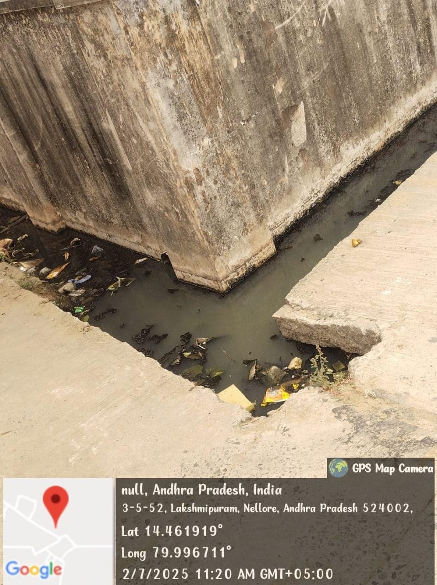
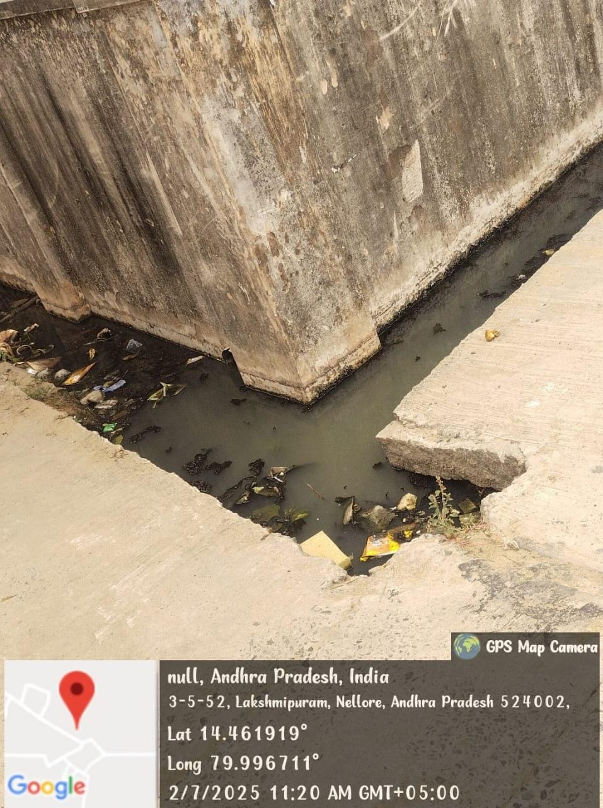

Causes and Their Impacts of Water Pollution
1. Industrial Waste
Releases toxic chemicals and heavy metals into water bodies, harming aquatic life and making water unsafe for human use.
2. Agricultural Runoff
Pesticides and fertilizers run into rivers and lakes, causing algal blooms, which deplete oxygen and kill marine life.
3. Sewage and Wastewater
Untreated sewage contaminates water with harmful bacteria and viruses, leading to waterborne diseases like cholera.
4. Oil Spills
Oil forms a thick layer on water surfaces, suffocating marine animals and damaging ecosystems.
5. Plastic Pollution
Plastics take centuries to degrade and are ingested by marine animals, causing injury or death.
 
